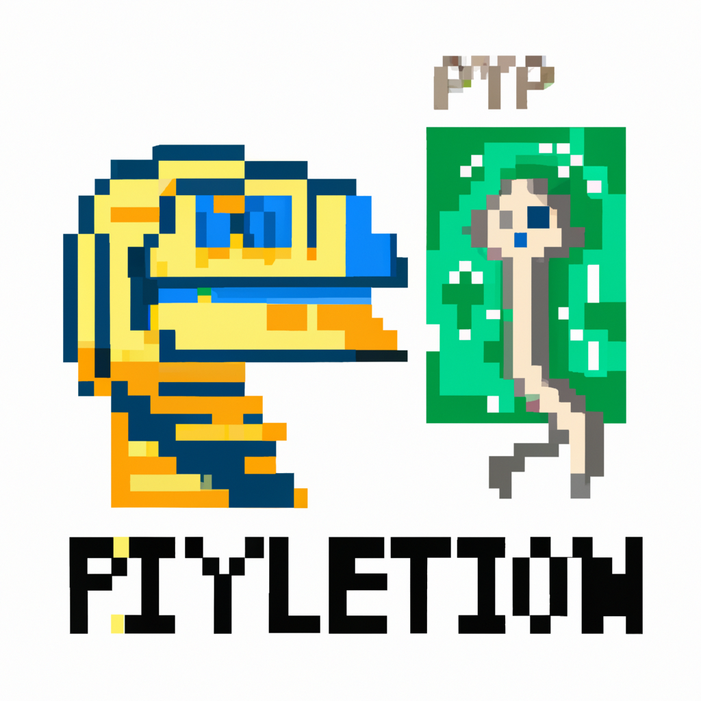

The future of Python and AI

In the world of technology and coding, the future of artificial intelligence (AI) is an exciting and rapidly evolving field. As a Python professional and instructor, I have seen firsthand how Python has become a major player in the development of AI and machine learning applications.
Python's simplicity and readability make it an ideal language for AI development, allowing developers to quickly prototype and test algorithms. With the rise of deep learning frameworks such as TensorFlow and PyTorch, Python has become even more essential for building cutting-edge AI models.
In the future, I believe that Python will continue to be a key language for AI development. As AI becomes more integrated into our daily lives, the demand for skilled Python developers will only increase. From self-driving cars to virtual assistants, the possibilities for AI applications are endless.
As a Python professional, I am excited to see what the future holds for AI and Python developers. The potential for innovation and growth in this field is limitless, and I am confident that Python will continue to play a central role in shaping the future of AI.